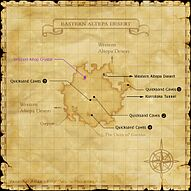

Description
Eastern Altepa Desert is an outdoor area in Kuzotz.
Map

Involved in Quests / Missions
| Quest / Mission | Type | Starter | Location |
|---|---|---|---|
| 20 in Pirate Years | AF (NIN) | Ryoma | Norg (H-8) |
| A Craftsman's Work | AF (DRG) | Miaux | Northern San d'Oria (E-6) |
| Beastmen Treasure (Kuzotz Region) | General | Peddlestox | Western Altepa Desert (L-7) |
| Don't Forget the Antidote | General | Edigey | Rabao (F-9) |
| Eastern Altepa Desert/Expeditionary Force | Expeditionary Force | --- | --- |
| For the Birds | General | Koblakiq | Oldton Movalpolos (H-11) |
| Eastern Altepa Desert/Garrison | Garrison | --- | --- |
| Inheritance | Weapon Skills | Gumbah | Bastok Mines (J-7) |
| The Missing Piece | Scroll | Alfesar | Rabao (H-7) |
NPCs
| Name | Location | Type |
|---|---|---|
| Eulaclaire | pos=G-7 | Chocobo Renter |
| Sowande | pos=F-10 | Outpost Merchant |
| Daborn, I.M. | pos=I-6 | Conquest Overseer: Bastok: Outland Guard |
| Lindgard, I.M. | pos=F-10 | Conquest Overseer: Bastok: Outpost Guard |
| Laimeve, R.K. | pos=I-6 | Conquest Overseer: San d'Oria: Outland Guard |
| Eaulevisat, R.K. | pos=F-10 | Conquest Overseer: San d'Oria: Outpost Guard |
| Sahgygy, W.W. | pos=I-6 | Conquest Overseer: Windurst: Outland Guard |
| Variko-Njariko, W.W. | pos=F-10 | Conquest Overseer: Windurst: Outpost Guard |
| Lokpix | pos=G-7 | Quest Giver NPC |
Notorious Monsters
| Name | Level | Drops | Steal | Family | Spawns | Notes |
|---|---|---|---|---|---|---|
| Cactrot Rapido | 80-81 | Arco de Velocidad Arete del Sol Cactuar Needle Cactuar Root Cactus Stems | — |  SabotendersImage source SabotendersImage source | — | L |
| Centurio XII-I | 56 | Intruder Earring | — |  AnticaImage source AnticaImage source | — | A, L |
| Donnergugi | — | Thunder Coral | — |  BeetlesImage source BeetlesImage source | — | L |
| Dune Widow | 45-47 | Spider Torque Spider Web | Spider Web |  SpidersImage source SpidersImage source | — | A, H |
| Nandi | 48-49 | Rathe Earring | — |  DhalmelsImage source DhalmelsImage source | — | L |
| Sabotender Corrido | 72 | Aptant: Ishis | — | SabotendersImage source | — | A |
Regular Monsters


Event Monsters
| Name | Level | Drops | Steal | Family | Spawns | Notes |
|---|---|---|---|---|---|---|
| Decurio I-III | 55 | — | — | AnticaImage source | 1 | Spawned Quest: A Craftsman's Work; A, L, H, Sc |
| Tsuchigumo | 42 | — | — | SpidersImage source | 2 | Spawned Quest: 20 in Pirate Years; A, L |
EXP camps
Arrival and hazards
Eastern approach book. Start with giant spiders; avoid anticans and casting near elementals.
Story walkthroughs in this area
| Story | Mission / quest |
|---|---|
| AMK 9 | Rescue! A Moogle's Labor of Love |
References
External references describe their own server or retail rules. Documented Zenith changes take precedence.
Map credits: Map 1 — HorizonXI Wiki. Original game maps © SQUARE ENIX; redrawn maps retain the credited authorship and license.

Additional level-75 reference


|
The eastern half of Zepwell Island is made up of this arid desert wasteland. While remnants of the ancient Galkan civilization that once thrived here dot the landscape, today the area is dominated by sand, wind, and the occasional antican that roams the dunes. Connecting Areas |
Involved in Quests/Missions
| Quest | Type | Starter | Location |
| 20 in Pirate Years | AF (NIN) | Ryoma | Norg (H-8) |
| A Craftsman's Work | AF (DRG) | Miaux | Northern San d'Oria (E-6) |
| Beastmen Treasure (Kuzotz Region) | General | Peddlestox | Western Altepa Desert (L-7) |
| Don't Forget the Antidote | General | Edigey | Rabao (F-9) |
| EF: Eastern Altepa Desert | Expeditionary Force | --- | --- |
| For the Birds | General | Koblakiq | Oldton Movalpolos (H-11) |
| Garrison/Eastern Altepa Desert | Garrison | --- | --- |
| Inheritance | Weapon Skills | Gumbah | Bastok Mines (J-7) |
| The Missing Piece | Scroll | Alfesar | Rabao (H-7) |

Notorious Monsters Found Here
|
Name |
Level |
Drops |
Steal |
Family |
Spawns |
Notes | |||||||
| Cactrot Rapido | 80 - 81 | Sabotender | 1 | L | |||||||||
| Centurio XII-I | 56 - 56 | Antica | 1 | A, L | |||||||||
| Decurio I-III | 55 | Antica | 1 | A, L, H, Sc | |||||||||
| Dune Widow | 45 - 47 | Spider | 1 | H | |||||||||
| Tsuchigumo | 42 | Spider | 2 | A, L | |||||||||
|
HP = Detects Low HP; M = Detects Magic; Sc = Follows by Scent; T(S) = True-sight; T(H) = True-hearing JA = Detects job abilities; WS = Detects weaponskills; Z(D) = Asleep in Daytime; Z(N) = Asleep at Nighttime | |||||||||||||
Mobs Found Here
|
Name |
Level |
Drops |
Steal |
Family |
Spawns |
Notes | |||||||
| Antican Auxiliarius | 35 - 39 | Antica | 8 Respawn:5 minutes |
A, L, H, Sc | |||||||||
| Antican Centurio | 50 - 52 | Antica | 3 Respawn:5 minutes |
A, L, H, Sc | |||||||||
| Antican Decurio | 44 - 49 | Antica | 18 Respawn:5 minutes |
A, L, H, Sc | |||||||||
| Antican Faber | 35 - 39 | Antica | 5 Respawn:5 minutes |
A, L, H, Sc | |||||||||
| Antican Funditor | 35 - 39 | Antica | 7 Respawn:5 minutes |
A, L, H, Sc | |||||||||
| Antican Speculator | 44 - 49 | Antica | 6 Respawn:5 minutes |
A, L, H, Sc | |||||||||
| Antican Veles | 50 - 52 | Antica | 3 Respawn: 5 minutes |
A, L, H, Sc | |||||||||
| Bigclaw | 48 - 51 | Crab | Fished Up | A, H | |||||||||
| Cutter | 30 - 33 | Crab | Fished Up | A, H | |||||||||
| Desert Dhalmel | 39 - 44 | Dhalmel | 35 Respawn:5 minutes |
L, S, Sc | |||||||||
| Diatryma | 47 - 50 | Roc | 7 | A, S | |||||||||
| Doom Scorpion | 44 - 47 | Scorpion | 5 | A, L, H, Sc | |||||||||
| Earth Elemental | 47 - 49 | Elemental | 7 | M | |||||||||
| Fire Elemental | 47 - 49 | Elemental | 6 | M | |||||||||
| Flesh Eater | 37 - 42 | Worm | 28 20:00-4:00 |
A, H | |||||||||
| Giant Spider | 30 - 34 | Spider | 51 Respawn 5 minutes |
L, H | |||||||||
| Goblin Digger | 45 - 49 | Goblin | 1 | A, L, S | |||||||||
| Goblin Poacher | 45 - 49 | Goblin | 9 | A, L, S | |||||||||
| Goblin Reaper | 45 - 49 | Goblin | 6 | A, L, S | |||||||||
| Goblin Robber | 45 - 49 | Goblin | 10 | A, L, S | |||||||||
| Goblin Trader | 45 - 49 | Goblin | 6 | A, L, S | |||||||||
| Goblin's Spider | 38 - 40 | Spider | 7 Assists: Goblin Trader |
H | |||||||||
| Greater Pugil | 30 - 33 | Pugil | Fished Up | A, H | |||||||||
| Ironshell | 36 - 39 | Crab | Fished Up | A, H | |||||||||
| Lesser Manticore | 47 - 49 | Manticore | 10 | A, S, Sc | |||||||||
| Lost Soul | 44 - 48 | Skeleton | 13 Spawns During: Nighttime |
A, H, HP | |||||||||
| Makara | 42 - 45 | Pugil | Fished Up | A, H | |||||||||
| Sabotender | 42 - 46 | Sabotender | 16 | A, H | |||||||||
| Sand Beetle | 36 - 40 | Beetle | 65 | L, S | |||||||||
|
HP = Detects Low HP; M = Detects Magic; Sc = Follows by Scent; T(S) = True-sight; T(H) = True-hearing JA = Detects job abilities; WS = Detects weaponskills; Z(D) = Asleep in Daytime; Z(N) = Asleep at Nighttime | |||||||||||||
Adapted from Eden Wiki: Eastern Altepa Desert · Contributors and history · CC BY-SA 4.0. Revision 45892. Layout, links and optional background text adapted for Zenith.